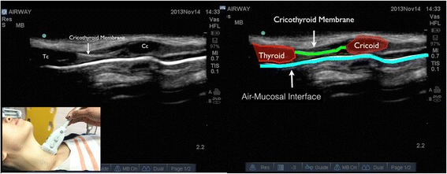
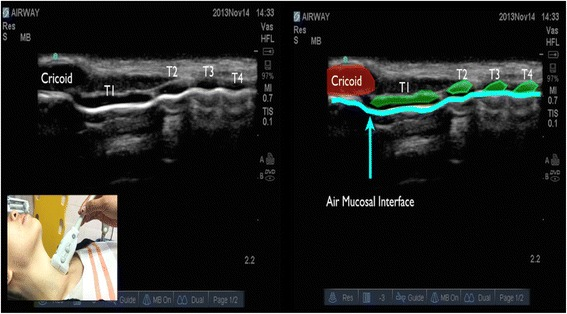
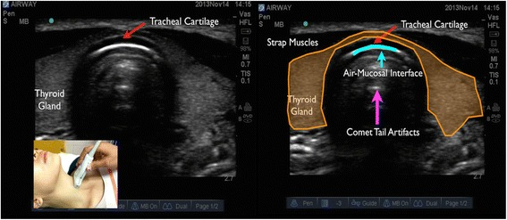
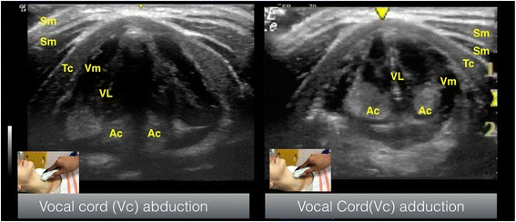
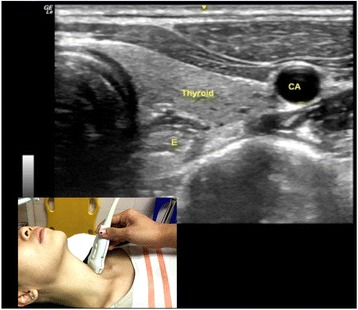
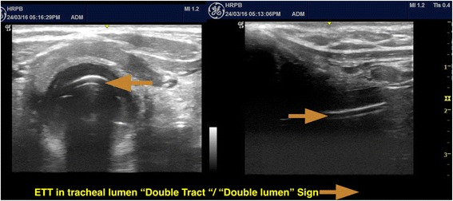

"Point-of-care ultrasound has moved airway assessment from the purely external to the sonographic. A high-frequency linear probe on the anterior neck identifies the cricothyroid membrane before it is needed, confirms tracheal versus oesophageal intubation in real time, and screens the gastric antrum for aspiration risk — all at the bedside, without radiation."
Synthesised from Kristensen MS et al., ultrasound for airway management; Miller's Anesthesia.Sonoanatomy of the anterior neck
- Probe — high-frequency (7–15 MHz) linear transducer, transverse then longitudinal, sweeping from mentum to sternal notch.
- Layers — skin, subcutaneous fat, strap muscles, then the cartilages: thyroid (inverted V), cricoid (rounded, hypoechoic), and the tracheal rings as a "string of pearls" longitudinally.
- Air–mucosa interface — a bright hyperechoic line with posterior reverberation / comet-tail artefact (air blocks the beam, so you see the near wall, not the lumen).
- Cricothyroid membrane — identified between thyroid and cricoid cartilages (longitudinal "string-of-pearls" method) and marked before an anticipated difficult airway/FONA.
- Oesophagus — usually postero-lateral (commonly to the left) of the trachea; seen to distend with an oesophageal intubation.
| Clinical use | What you look for |
|---|---|
| Confirm tracheal intubation | Single air–mucosa interface (tracheal); a second parallel interface = "double-tract sign" of oesophageal intubation. Bilateral lung sliding confirms ventilation and excludes endobronchial placement. |
| Locate the cricothyroid membrane | Mark before predicted difficult airway / obese / distorted necks — faster and more accurate than palpation for FONA. |
| Predict difficult laryngoscopy | Increased anterior neck soft tissue / distance from skin to hyoid, epiglottis or thyrohyoid membrane. |
| Gastric antrum | Antral cross-sectional area / content (empty, clear fluid, solid) to gauge aspiration risk in the fasted-uncertain patient. |
| Others | Predict paediatric tube size, confirm bougie/tube depth, screen for subglottic stenosis, guide percutaneous tracheostomy. |
Real airway ultrasound — labelled images






Ultrasound images: Osman A, Sum KM. Role of upper airway ultrasound in airway management. J Intensive Care. 2016;4:52 — CC BY 4.0, via PubMed Central. Used with attribution.
Further reading
A detailed, image-rich walk-through of anterior-neck sonoanatomy: ASRA POCUS Spotlight — Airway Ultrasound · read on asra.com ↗ (external; images © ASRA — viewed on their site, not reproduced here).